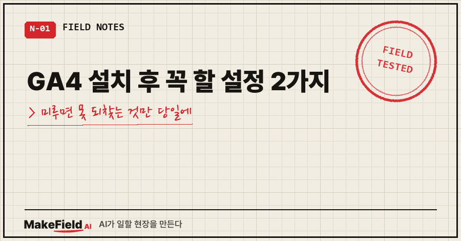
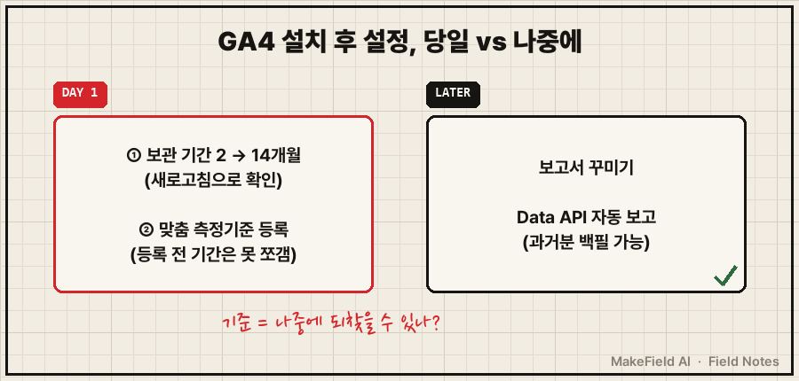
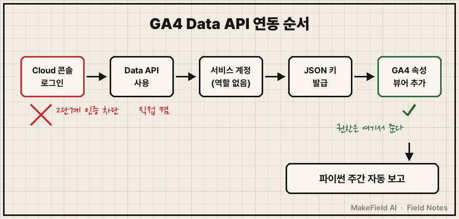
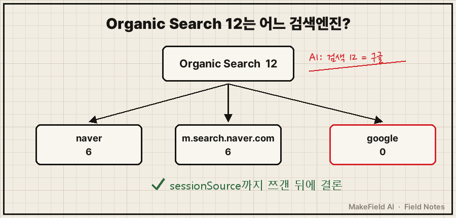

GA4 설치 후 설정은 딱 두 개만 그날 하면 돼요.
이벤트 데이터 보관 기간을 2개월에서 14개월로 바꾸는 것, 그리고 버튼 이벤트에 붙인 매개변수를 맞춤 측정기준으로 등록하는 것. 나머지는 나중에 해도 데이터가 서버에 그대로 쌓여 있어요.
핵심 사실 한 줄로 적어 둘게요. Google 애널리틱스 고객센터 기준(2026년 10월 확인), 무료(표준) 속성의 이벤트 데이터 보관 기간은 2개월 또는 14개월 중에서 고를 수 있고, 이 설정은 탐색 분석·유입경로 보고서에만 영향을 줍니다. 기본 보고서는 이 설정과 상관없어요.
저는 낮에는 제조 현장에서 제어 로직을 짜고, 밤에는 개인 사이트와 자동화를 AI랑 같이 굴리는 15년차 엔지니어예요.
2026년 10월 5일에 개인 사이트에 GA4를 붙였고, 닷새 뒤 파이썬으로 주간 자동 보고까지 연결했어요. 그 과정에서 챙긴 것과 막힌 것을 순서대로 적습니다.
1. GA4 설치 후 설정, 왜 '그날' 해야 하나요?
처음 생각은 단순했어요.
"측정 ID 넣었고, 실시간에 내 접속 잡히고, 됐다. 데이터 쌓이면 나중에 보자."
실제로 공용 스크립트 하나에 측정 ID를 넣으니 전 페이지 측정이 켜졌고, 실시간 보고서에 활성 사용자 2명(AI가 띄운 시험 접속 + 제 휴대폰)이 찍혔어요. 측정은 정상이었죠.
그런데 AI와 같이 설정 화면을 하나씩 짚다 보니 성격이 다른 두 종류가 섞여 있더라고요.
- 나중에 해도 되는 것: 보고서 꾸미기, 자동 리포트 연동. 데이터는 서버에 쌓이니 나중에 API로 과거분을 뽑으면 돼요.
- 지금 안 하면 사라지는 것: 짧은 보관 기간에 지워지는 데이터, 등록 전이라 못 쪼개는 지난 기간.
그래서 기준을 이렇게 잡았어요. 소급이 안 되는 것만 당일 처리.

2. 설정 ①: 데이터 보관 기간 2개월 → 14개월
경로는 관리 → 속성 열 → 데이터 설정 → 데이터 보관이에요(속성 편집자 권한 필요). 제 속성은 2개월로 잡혀 있었고, 14개월로 바꿨어요.
겪어 보니 팁이 두 개 있어요.
- 저장 후 새로고침해서 값이 남았는지 다시 보세요. 저는 새로고침 후 14개월이 유지된 걸 보고 나서야 끝냈어요.
- 공식 안내상 변경은 24시간 뒤 적용되고, 늘리면 이미 수집한 데이터에도 적용돼요. 반대로 줄이면 다음 월별 처리 때 지워지니 줄일 땐 조심해야 하고요.
개인정보처리방침에 보관 기간을 적어 뒀다면 문구도 같은 날 고치세요. 저도 그렇게 맞췄어요.
3. 설정 ②: 맞춤 측정기준은 등록한 날부터 집계돼요
사이트 버튼마다 cta_click 이벤트를 쏘면서 label 매개변수에 버튼 이름을 붙여 두었어요. 문제는 매개변수를 보낸다고 보고서에 바로 나오지 않는다는 거예요. 맞춤 측정기준으로 등록해야 버튼별로 쪼개 볼 수 있어요.
관리 → 맞춤 정의 → 맞춤 측정기준 만들기
측정기준 이름 : CTA 라벨
범위 : 이벤트
이벤트 매개변수: label등록한 날 AI가 남긴 판단 이유를 그대로 옮기면 이래요.
WHY: 맞춤 측정기준은 소급 안 됨, 미루면 그 기간 버튼별 데이터 유실공식 도움말은 "24~48시간 후 보고에 사용할 수 있다"고만 적고, 등록 전 기간이 안 잡힌다는 건 여러 GA4 해설의 공통 설명이에요. 그래서 매개변수를 보내기 시작한 날 같이 등록하는 게 안전해요. 표준 속성은 이벤트 범위 맞춤 측정기준이 50개까지라 아낄 이유도 없고요.
4. 닷새 뒤 API 연동, 첫 화면에서 막혔어요
10월 10일엔 주간 보고를 자동으로 받으려고 GA4 Data API를 붙였어요. Google Cloud 콘솔을 열자마자 이런 차단 화면이 떴어요(화면 문구 요약).
Google Cloud 액세스 차단됨
2026-06-19부터 2단계 인증(2SV) 의무Google Cloud 공식 문서를 보면 Gmail을 포함한 개인 Google 계정은 2025년 5월 12일 이후 순차적으로 2단계 인증이 있어야 콘솔에 들어갈 수 있어요. 휴대폰 인증이 걸린 보안 설정이라 AI가 대신할 수 없었고, 제가 직접 켠 뒤 몇 분 지나 다시 들어가니 열렸어요.
그다음은 이 순서로 갔어요.
- 기존 Cloud 프로젝트에서 Google Analytics Data API 사용 (새 프로젝트를 또 만들지 않음)
- 서비스 계정
ga-reader생성, Cloud 역할은 부여 안 함 - JSON 키 발급 → 비밀 폴더로 이동 (AI에겐 내용 출력 금지)
- GA4 쪽 속성 액세스 관리에서 서비스 계정 이메일을 '뷰어'로 추가
pip install google-analytics-data후 스크립트 작성
제가 헷갈렸던 곳이 2번과 4번이에요. 권한은 Cloud가 아니라 GA4 속성 쪽에서 주는 거예요. 읽기만 할 거라 뷰어면 충분했어요.

핵심 호출은 이 정도예요. (속성 번호는 가렸어요)
from google.analytics.data_v1beta import BetaAnalyticsDataClient
from google.analytics.data_v1beta.types import DateRange, Dimension, Metric, RunReportRequest
c = BetaAnalyticsDataClient.from_service_account_file(KEY)
req = RunReportRequest(
property="properties/XXXXXXXXX",
date_ranges=[DateRange(start_date="2026-10-05", end_date="2026-10-11")],
dimensions=[Dimension(name="sessionDefaultChannelGroup"), Dimension(name="sessionSource")],
metrics=[Metric(name="sessions")])
rows = c.run_report(req).rows10월 5일 주를 백필해 보니 사용자 32·세션 48·조회 59로, 몇 시간 전 화면 캡처로 본 31·45·56과 같은 흐름이었어요. 차이는 그사이 들어온 분이고요. 숫자를 처음 믿기 전에 화면과 한 번 대조하는 걸 꼭 권해요.
5. 'Organic Search 12'를 AI는 구글이라고 했어요
연동 전, 화면 캡처로 중간점검을 했을 때 AI가 채팅에 남긴 해석은 이 한 줄이었어요. "검색 12 = 구글."
API로 sessionSource까지 쪼개 보니 전혀 달랐어요.
Organic Search / naver 6
Organic Search / m.search.naver.com 6
Organic Search / google 012세션 전부 네이버였어요. Organic Search는 검색엔진을 묶어 놓은 그룹일 뿐이라, 어느 엔진인지는 소스까지 내려가야 보여요. 그 뒤로 저는 채널 그룹 숫자만 보고 내린 해석은 결론으로 안 씁니다.

6. GA4 설치 후 설정 체크리스트
| 언제 | 할 일 | 미루면 |
|---|---|---|
| 설치 당일 | 데이터 보관 기간 14개월 (새로고침 확인) | 2개월 지난 데이터는 탐색 분석에서 못 봄 |
| 설치 당일 | 이벤트 매개변수 → 맞춤 측정기준 등록 | 등록 전 기간은 그 기준으로 못 쪼갬 |
| 설치 당일 | 실시간 보고서로 내 접속 1건 확인 | 측정이 안 되는 걸 며칠 뒤에 앎 |
| 나중에 | Data API 연동 (2단계 인증 먼저) | 과거분 백필 가능, 급하지 않음 |
| 연동 직후 | 화면 숫자와 API 숫자 1주 대조 | 틀린 숫자로 판단 |
Q. 이미 몇 달 지났는데 보관 기간을 지금 늘려도 되나요?
네, 늘리면 아직 남아 있는 데이터에도 적용돼요. 이미 지워진 2개월 이전 데이터가 돌아오진 않으니 빠를수록 좋아요.
Q. 서비스 계정에 Cloud 역할을 꼭 줘야 하나요?
제 경우엔 안 줬어요. GA4 속성에 뷰어로 추가한 것만으로 보고서 조회가 됐어요.
분석 도구는 "나중에 봐도 되는 것"과 "지금 안 하면 사라지는 것"을 가르는 게 첫 작업이었어요. 측정 ID 넣은 그날, 혹시 맞춤 측정기준 칸은 비어 있지 않으세요?
이렇게 AI랑 같이 만든 자동 보고 스크립트와 설정 기록은 makefield.ai에 정리해 두고 있어요.
출처
- Google 애널리틱스 고객센터, 데이터 보관 (표준 속성 2개월·14개월, 늘리면 기존 데이터에 적용, 24시간 후 적용, 탐색 분석·유입경로 보고서에만 영향) → https://support.google.com/analytics/answer/7667196?hl=ko
- Google 애널리틱스 고객센터, 맞춤 측정기준 및 측정항목 (24~48시간 후 사용, 표준 속성 이벤트 범위 50개·사용자 범위 25개) → https://support.google.com/analytics/answer/14240153?hl=ko
- Google Cloud 문서, 2-step verification requirement for Google Cloud (개인 Google 계정·Gmail 포함, 2025-05-12 이후 적용, 콘솔 접근에 2SV 필요) → https://docs.cloud.google.com/docs/authentication/mfa-requirement
- 사례: 2026-10-05 GA4 설치·설정 기록, 2026-10-10 Data API 연동 기록 (측정 ID·속성 번호·계정 정보 제외). 2026년 10월 20일 원문 확인
태그: #GA4설치후설정 #GA4데이터보관기간 #GA4맞춤측정기준 #GA4소급 #구글애널리틱스4 #GA4설정 #GA4DataAPI #GA4서비스계정 #구글클라우드2단계인증 #GA4자동보고서 #파이썬GA4 #GA4이벤트매개변수 #웹사이트분석 #자동화만들기 #MakeFieldAI